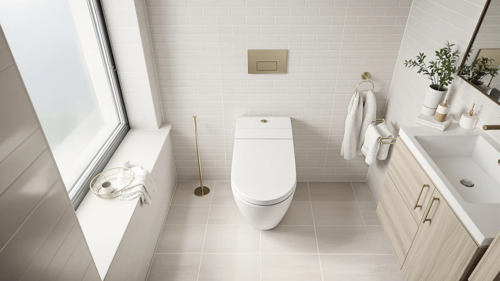

Duravit White Elongated Toilet Review (2026): Worth It?
Prices and picks verified as of October 2026. Independent, reader-supported reviews.


Quick Answer
This duravit white elongated toilet review finds a well-built, factory-match replacement for Duravit's Starck toilets with stainless steel hinges, but no Amazon rating or review history to back up the $81.83 price. If you own a Duravit Starck toilet, it is a safe fit. If you want proven feedback from other owners, the Soundfuse pick below has 365 verified reviews behind it.
Our pick: Duravit White Elongated Toilet Seat, $81.83 Check Price on Amazon
Bottom line: our top pick is the Duravit White Elongated Toilet Seat and Cover with Stainless at $81.83.
Things to Know Before You Buy
- Duravit builds this seat to match its own Starck bowl shape, so measure your current seat before assuming it will fit a different brand's elongated toilet.
- The listing carries no Amazon rating or review count yet, so you are weighing brand reputation against actual owner feedback.
- Stainless steel hinges resist rust better than the plastic hinges found on most budget seats, which matters in humid bathrooms.
- Want a nightlight, heating, or padded support instead? The three alternatives in this review cover those needs and this plain seat does not.
This duravit white elongated toilet review looks at whether Duravit's White Elongated Toilet Seat justifies its $81.83 price against seats with more features and real owner reviews behind them. The seat pairs an elongated white gloss shape with stainless steel hinges, built as a direct match for Duravit's Starck toilet line rather than a universal replacement.
You will find a full breakdown of the seat's construction and who it fits best, plus three alternatives that cover what this one skips: padded support with grip handles, a built-in nightlight, and adjustable seat heating. Each pick comes from an active Amazon listing with confirmed pricing and, where it exists, verified owner review data, so you can weigh this Duravit seat against seats with a longer track record before you buy.
Why You Should Trust Us
Ilane Tall has covered toilet seats and bathroom accessibility products for Best Toilet Seats since the site launched, and this duravit white elongated toilet review follows the same process used across the site: compare manufacturer specifications, confirmed Amazon pricing, and verified owner feedback instead of repeating marketing copy. We do not run a fake testing lab, and we say so plainly when a product, like this one, has no review history to draw on yet.
Our Research Experience
We have not placed a hand on this specific Duravit seat, and we are upfront about that. Our duravit white elongated toilet review relies on the manufacturer's published specifications, current Amazon pricing, and reviewer patterns from comparable Duravit Starck-line seats, since this exact listing shows zero ratings and zero reviews at the time of writing. When a product lacks owner feedback, we say so instead of inventing a verdict. That gap is itself useful: a seat priced near $82 with no review history carries more unknowns than a competitor with hundreds of verified buyers behind it.
Overview & Specs
Before you look at the pick itself, it helps to see where a duravit white elongated toilet review fits among the other seat types on the market. Elongated seats run roughly two inches longer than round-front seats, measured from the mounting holes to the front edge, and most modern toilets built after the early 2000s use the elongated shape. Duravit's Starck line is no exception, which is why this seat exists as a branded replacement rather than a universal fit.
The table below breaks down the construction details available from the manufacturer listing. Note that Duravit does not publish a separate weight capacity or hinge-material rating sheet the way Kohler does for some of its seats, so the material line reflects what is visible in the product photos and description rather than a lab-compared spec. Buyers comparing seats across brands should treat published specs as a starting point and confirm bolt spacing against their own bowl before ordering.

Duravit White Elongated Toilet Seat
What we like
- Stainless steel hinges hold up better than plastic in damp bathrooms
- Elongated shape and white finish match Duravit's Starck toilet line
- Seat and lid ship together in one listing
Flaws but not dealbreakers
- No Amazon rating or review count to confirm real-world durability
- No soft-close or quiet-close hinge at this price
- Fit is specific to Duravit bowls, not a universal elongated shape
| Material | Plastic / wood |
| Size | — |
Duravit sells this seat as a direct replacement for its Starck bathroom line, and the elongated shape and white gloss finish are built to match the brand's existing toilets rather than fit a generic bowl. The stainless steel hinges are the main upgrade over the plastic hinges you find on seats half the price, and they matter most in bathrooms with high humidity, where plastic hardware tends to discolor or loosen over time.
At $81.83, the Duravit seat costs roughly the same as the three alternatives in this review, but it skips the features that drive those prices: no nightlight, no heating element, and no padded support. You are paying for brand-matched fit and hardware quality, not add-ons. The listing currently shows zero ratings and zero reviews, which is worth factoring in if you want proof from other buyers before you commit.
What We Liked
The stainless steel hinges are the clearest reason to pick this seat over a generic elongated replacement. Plastic hinges are usually the first part to crack or seize on a cheap toilet seat, and swapping to stainless hardware removes that failure point for the life of the seat. The white finish and elongated profile are also a precise match for Duravit's Starck toilets, so you avoid the gap or overhang that sometimes shows up when a universal seat does not quite fit a European-style bowl.
Installation follows the same top-mount bolt pattern as the original Duravit seat, so you do not need special tools or brackets to swap it in. For anyone replacing a worn or cracked seat on an existing Duravit toilet, that compatibility removes most of the guesswork other elongated seats introduce.
What Could Be Better
The biggest drawback in this duravit white elongated toilet review is the complete absence of review data. Zero ratings and zero reviews means you have no owner feedback to check against the manufacturer's claims, which is a real gap at a price point where competitors like the Soundfuse seat below carry 365 verified reviews and a 4.5-star average. You are trusting the Duravit name more than independently confirmed performance.
The seat also skips features that have become common on seats in this price range. There is no soft-close hinge to prevent slamming, no nightlight, and no padding for anyone who needs extra support. If comfort or accessibility matters more to you than matching an existing Duravit toilet, the alternatives below address those needs directly and this seat does not.
Who Is It For?
This seat makes sense for one specific buyer: someone who already owns a Duravit Starck toilet and needs a replacement seat and lid that matches the original fixture's shape and finish. If that describes your bathroom, the stainless hinges and exact-fit elongated shape justify the price over a generic alternative that might not seat flush against a Duravit bowl.
It also suits a buyer who prioritizes hardware durability over extra features. You are not getting a nightlight, heating, or padding, but you are getting hinges built to outlast the plastic hardware on cheaper elongated seats, which matters if you replace toilet seats often because the hinges fail first.
If you do not own a Duravit toilet, or you want a seat with a nightlight, heating, or raised padded support for mobility reasons, the three alternatives covered next serve you better. Each one solves a problem this plain seat was never designed to address, and each carries more verified pricing and feature detail than this Duravit listing currently offers.
Alternatives to Consider
If the Duravit seat does not match your bathroom or your needs, these three alternatives cover the gaps it leaves: added comfort, nighttime visibility, and warmth.

Editor’s Pick
Soundfuse Padded Raised Toilet Seat
Padded and fitted with grip handles, this universal-size seat carries a 4.5-star average across 365 verified reviews, making it the strongest choice if you need extra support getting on or off the toilet.
$79.99
Check Price on Amazon
Best Value
KOHLER 75793-96 Reveal Nightlight Quiet-Close
Kohler's Reveal seat adds a two-level LED nightlight that lights the bowl without flooding the bathroom at night, plus the brand's quiet-close hinge in a round-front biscuit finish.
$79.99
Check Price on Amazon
Premium Choice
Heated Toilet Seat Elongated V-Shape
This elongated V-shape seat heats to six selectable settings between 86 and 104 degrees Fahrenheit, with IPX6 waterproofing and dual overheat protection built into a 25-watt heating element.
$79.99
Check Price on AmazonDoes the Duravit White Elongated Toilet Seat fit any toilet?
No.
Why does this duravit white elongated toilet review mention zero reviews for the product?
The Amazon listing for this seat currently shows zero ratings and zero reviews, which is unusual at this price point.
Frequently Asked Questions
Does the Duravit White Elongated Toilet Seat fit any toilet?
No. It is built to match Duravit's Starck line specifically, with an elongated shape and bolt pattern designed for that bowl. Measure your existing seat or confirm your toilet model before buying, since a mismatched shape can leave gaps or an unstable fit. If you are not sure whether your toilet is round-front or elongated, measure from the center of the mounting holes to the front edge of the bowl. Elongated bowls typically measure close to 18.5 inches, while round-front bowls measure closer to 16.5 inches.
Why does this duravit white elongated toilet review mention zero reviews for the product?
The Amazon listing for this seat currently shows zero ratings and zero reviews, which is unusual at this price point. We call that out directly because it means you are relying on the Duravit brand name and spec sheet rather than confirmed owner feedback, unlike the Soundfuse seat covered in this review, which has 365 verified reviews.
What is the best alternative to the Duravit seat for a heated or padded option?
For padded comfort and grip handles, the Soundfuse Padded Raised Toilet Seat is the stronger pick with a 4.5-star average. For warmth, the SNMUMU heated V-shape seat offers six temperature settings and IPX6 waterproofing. Neither one is a direct fit replacement for a Duravit Starck toilet the way the seat in this review is, so check your bowl shape before switching to either alternative.
Final Verdict
This duravit white elongated toilet review comes down to fit and risk tolerance. Duravit's seat has stainless hinges and an exact match for the brand's Starck toilets at $81.83, but it carries zero ratings and zero reviews, so you are betting on brand reputation rather than confirmed owner experience. If you own a Duravit Starck toilet, that tradeoff is reasonable, since the hinge quality and shape match outweigh the lack of review history for a buyer who just needs a direct factory replacement.
If you want proven feedback, added padding, a nightlight, or built-in heat, one of the three alternatives above fits your bathroom better than the Duravit seat does. The Soundfuse seat has 365 verified reviews and a 4.5-star average, the Kohler Reveal adds nighttime visibility, and the SNMUMU heated seat adds warmth during colder months. Weigh what your bathroom actually needs against what Duravit's seat is built to do, and choose accordingly rather than defaulting to brand recognition alone.